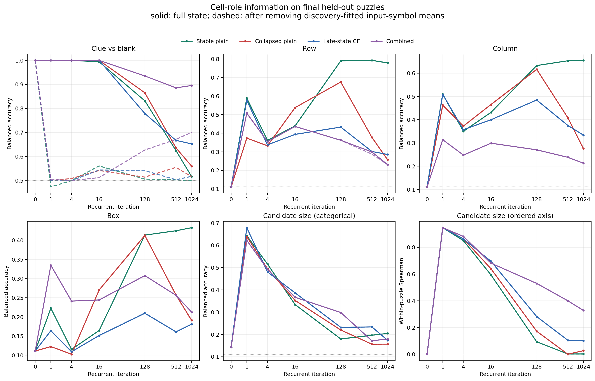
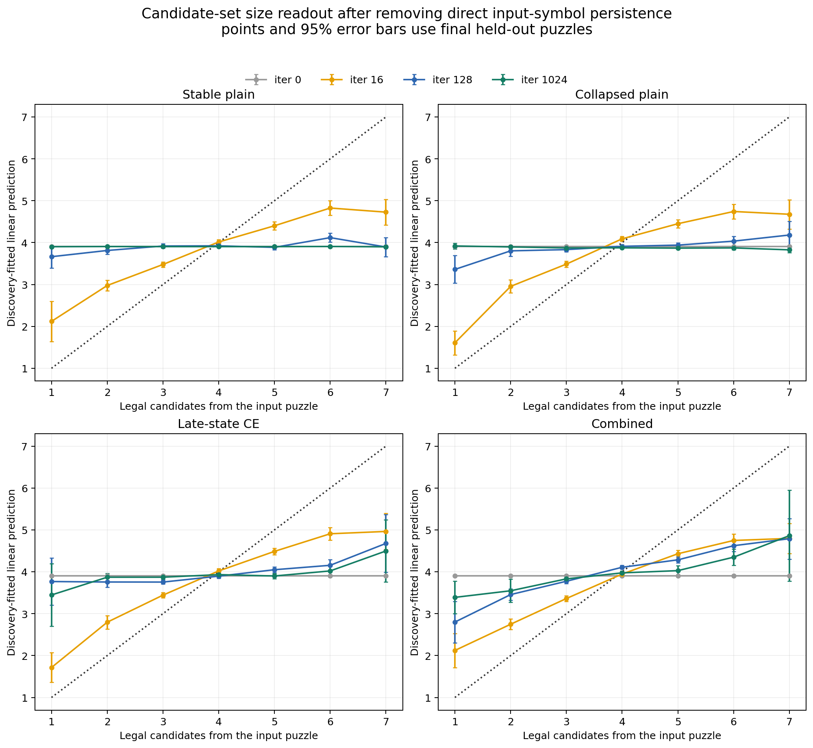
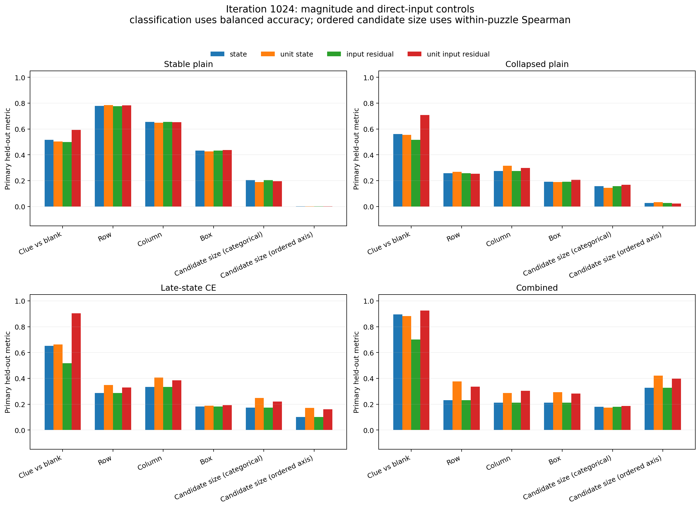
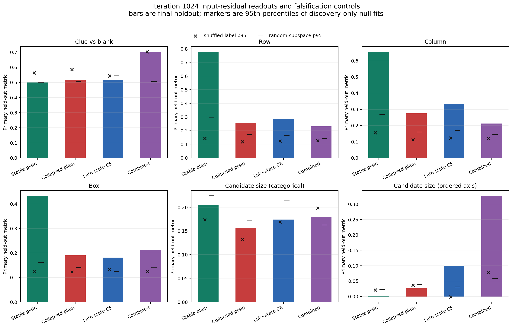

All readouts were fit on 20 discovery puzzles, selected on 20 validation puzzles, and evaluated once on 20 final puzzles. The table uses iteration 1024 and input-symbol residuals.
| Model | Puzzle accuracy | Row balanced accuracy | Column balanced accuracy | Candidate within-puzzle Spearman |
|---|---|---|---|---|
| Stable plain | 1.000 | 0.778 | 0.655 | 0.002 |
| Collapsed plain | 0.050 | 0.257 | 0.276 | 0.026 |
| Late-state CE | 1.000 | 0.286 | 0.333 | 0.100 |
| Combined | 0.983 | 0.231 | 0.213 | 0.328 |




Full machine-readable results: metrics.json.